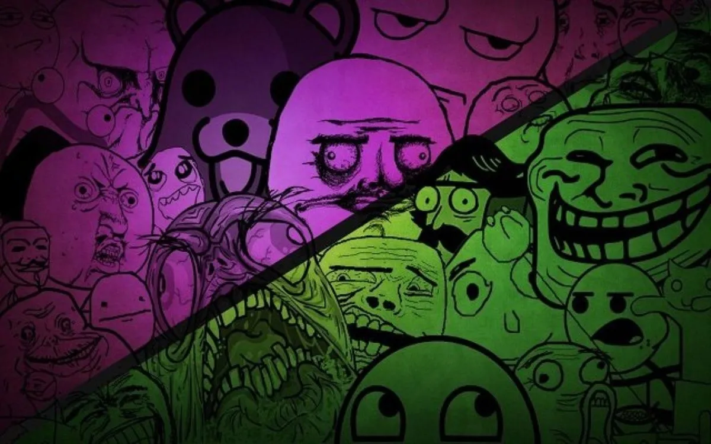

Historia de los memes
Los memes son un concepto relativamente nuevo dentro del Internet, sin embargo, su historia se remonta a muchas décadas atrás. Estos existen desde mucho antes que surgiera el internet y se describen como una forma de transmitir ideas, tradiciones y costumbres de generación en generación. Sin embargo, con el paso de los años se han transformado y personalizado para transmitir múltiples mensajes. Incluso, actualmente cuando se habla de meme se asocia a la redes sociales, efectivamente, este es uno de los formatos más difundimos en la comunidad 2.0. Esto debido a que tienen la capacidad de generar impacto, así como sentido de pertenencia entre los usuarios, provocando que los compartan y se viralicen. Los memes, más allá del lado humorístico, se han convertido en nuevo estilo de comunicación. Una forma sencilla de expresar nuestras ideas, pensamientos y hasta noticias a través de las redes sociales.
Que es un meme????
Un meme es un tipo de contenido que consta de varios elementos (por ejemplo, una imagen y un texto) relacionados en una misma unidad significante, para representar de una idea, concepto, opinión o situación. Generalmente, su tono es humorístico, irónico o satírico y se crean para transmitir un mensaje o una idea de manera rápida y efectiva. Suelen ser llamados específicamente memes de Internet y se difunden habitualmente por las redes sociales Los memes han ganado gran valor como manifestación cultural, ya que no solo ocupan un papel en la sociedad digital como forma de entretenimiento, sino que comunican valores y matrices de opinión. Permiten, por lo tanto, registrar o captar las ideas-fuerza que se mueven en el imaginario colectivo.